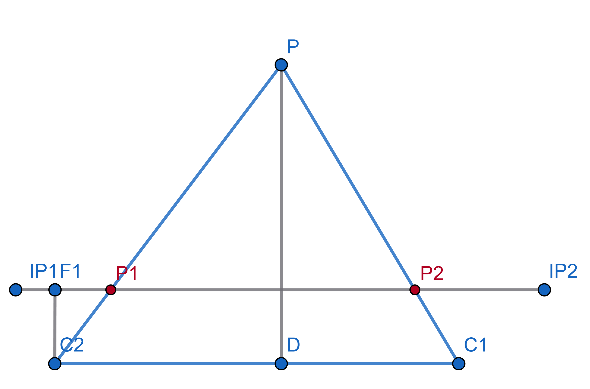
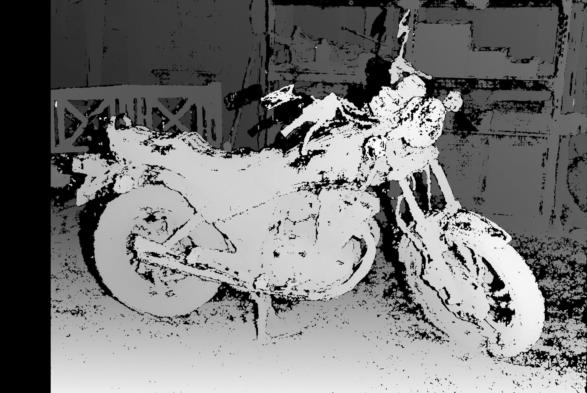
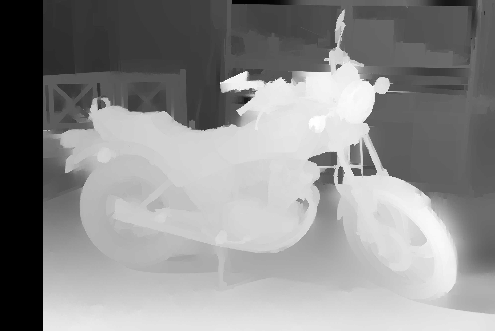

Карта диспаратности
Что такое диспаратность
Мы получили пару ректифицированных изображений.
Представим нашу ситуацию в геометрическом виде.

C1 И C2 - центры камер.
Точки IP1 и IP2 - плоскости изображений (image plane)
P - наблюдаемая точка
P1 И P2 - перспективные проекции на соответсвующую плоскость
Диспаратностью для точки P будет называться смещение в пикселях точки P2 относительно точки P1:
Зачем это нужно?
С помощью диспаратности мы можем определить расстояние до точки в реальном мире (глубину).
Пусть f - длина отрезка C2F1 или фокусное расстояние, b - длина отрезка C1C2 или расстояние между камерами, тогда
Построение карты диспаратности
Карта диспаратности - это матрица, где каждый элемент показывает соответсвие между пикселем базового (чаще всего левого) изображения и пикселем парного. Это довольно сложная вычислительная задача.
Для получения такой карты будет использоваться алгоритм Semi-Global Block Matching
Простыми словами, алгоритм делит наше изображение на маленькие участки пикселей (блоки) и по эпиполярным линиям ищет похожие блоки на парном изображении. Для каждого блока оценивается "стоимость", чем меньше блок с базового изображения отличается от блока с найденного, тем лучше. Главной особеностью алгоритма SGBM является учитывание не только одного блока локально, а также соседних блоков (это и называется semi-global)
Параметры для SGBM описаны в файле sgbm_config.yml
min_disparity: 0
num_disparities: 256 # Должно быть кратно 16
block_size: 5 # Нечётное число
disp_12_max_diff: 1
pre_filter_cap: 63
uniqueness_ratio: 15
speckle_window_size: 0
speckle_range: 2
Большое влияние на результат будут оказывать первые три параметра:
min_disparity - минимальное смещение, с которого начинается поиск
num_disparities - максимальный диапазон поиска смещений
block_size - размер одного блока
Для сохранения карты диспаратности используется скрипт 4_save_disparity.py
usage: 4_save_disparity.py [-h] cams cams output
Этот скрипт предназначен для показа и сохранения карты диспаратности. Чтобы сохранить карту, в терминале нажмите S. Помимо карты в
папку сохраняются исходные кадры с камер. Это необходимо для дальнейшего наложения цветом на облако точек. Поддерживает сохранение
нескольких карт диспаратности.
positional arguments:
cams Индексы камер
output Путь к папке, в которую будет сохранена карта диспаратности
options:
-h, --help show this help message and exit
Перед сохранением к полученной карте применяется пост-обработка
До пост-обработки: 
После: 